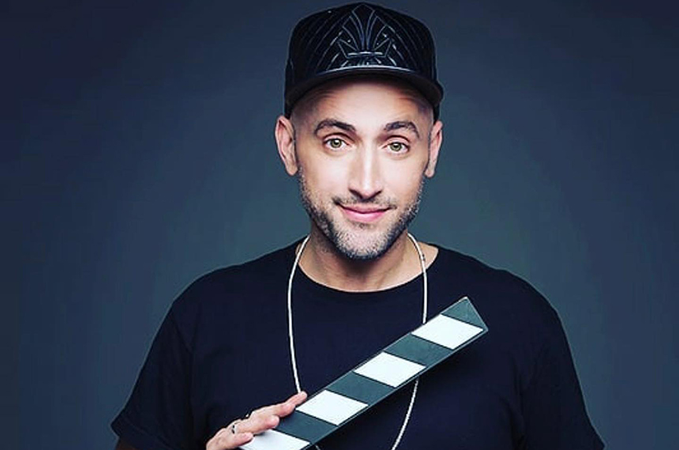
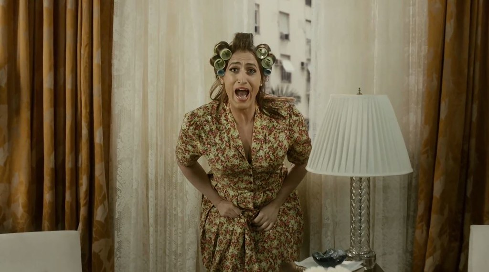
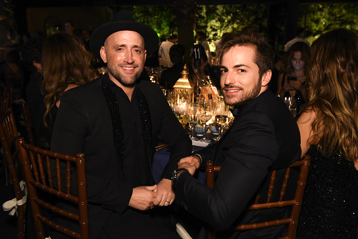
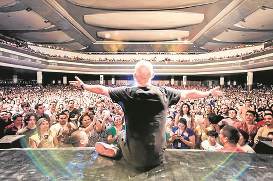
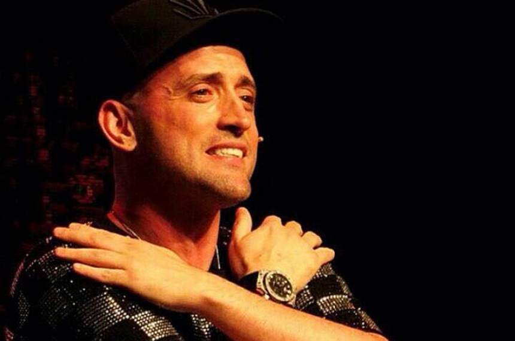

ator, humorista, diretor, roteirista e apresentador
O primeiro momento de visibilidade da carreira de Paulo Gustavo foi em sua participação na peça "Surto", em 2004, quando era estudante. Nessa peça surgiu a personagem marcante Dona Hermínia.
Em 2005 Paulo Gustavo se formou oficialmente como ator na Casa das Artes de Laranjeiras, passou a a fazer pequenas participações na TV na Record e na Globo. Em 2006 estreou a peça "Minha Mãe É uma Peça", que posteriormente foi adaptado para o cinema em 2013 e mais duas partes, em 2016 e em 2019.
Dona Hermínia foi uma personagem idealizada e inspirada em sua própria mãe e outras mulheres donas de casa, que reúne os aspectos mais cômicos da personalidade de uma típica dona de casa bastante carismática e característica. Pelo seu personagem e a atuação foi indicado ao Prêmio Shell de melhor ator.
Em 2012 participou do espetáculo Hiperativo, e apresentou do programa de TV 220 Volts, em 2011.
Seu último trabalho foi o especial de fim de ano 220 Volts, em dezembro de 2020.
Paulo Gustavo nasceu em Niterói, onde viveu a maior parte de sua vida. Assuiu sua sexualidade na adolescência e em 2015 se casou com Thales Bretas dermatologista, e foi morar no Rio de Janeiro. Em 2019 o casal teve filhos, Gael e Romeu, que foram gerados por barrigas de aluguel. O ator sempre foi muito apegado a família
Paulo Gustavo tinha excelentes condições financeiras e realizava doações com frequência para ajudar os necessitados, chegando a doar cerca de 1,5 milhão para a construção de um hospital para tratar doentes de câncer.
Em 2006, Paulo Gustavo fez algumas aparições na TV como citado anteriormente. Em 2007, fez uma participação no sítio do pica pau amarelo no papel de delegado. Em 2013, estreeou o filme minha mãe é uma peça e no mesmo ano também participou do seriado Vai que cola na Globo, que permaneceu até o ano de 2020
Em 2017, foi lançado o filme "Fala Sério, mãe" nos cinemas, no qual ele interpretou ele mesmo. Em 2020 lançou o filme "220 Volts: O filme" nos cinemas E em 2022 foi lançado o documentário "Filho da mãe - Um encontro com Paulo Gustavo, um documentário póstumo em homenagem a vida do querido ator e humorista brasileiro"
Em março de 2021, Paulo Gustavo foi diagnosticado com a COVID-19 e teve complicações sérias, por esse motivo precisou ser internado. Cerca de um mês depois seu estado de saúde se agravou ainda mais.
No mês seguinte, com a piora de seu quadro, foi submetido a terapia de oxigenação por membrana extracorporal, na qual um "pulmão artificial" auxilia na respiração e trocas gasosas.
Em maio do mesmo ano, os médicos realizaram um boletim, declarando que o quadro do ator seria irreversível. Posteriormente, o ator teve um episódio de embolia pulmonar, ocasionando seu falecimento no dia 4 de maio de 2021.
